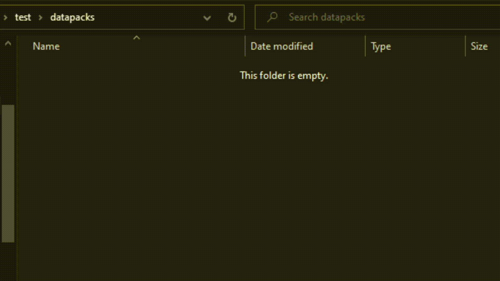

GUI Compiler is a website that allows you to easily create your own GUIs in Vanilla Minecraft using a datapack. You select a name, GUI type, optimization level, and customize the slots, then you can download the GUI datapack as a zip file! More information can be found on the How to Use page.
Datapack Setup Script
Datapack Setup is a simple script that will automatically set up a datapack's structure for you. Simply rename the script to what you want your datapack's namespace to be called and double-click it. It will automatically set up the file structure, and self-destruct once it has finished.

Autosus
This module (made for ChatTriggers 1.8.9) automatically triggers Among Us related sounds and visuals when someone in chat says "sus". Possibly the best thing I have ever created.